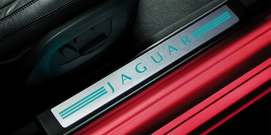

英国最新签证信息：
1.填写申请表：请登录www.visa4uk.fco.gov.uk填写相关申请表，并打印。
2.预约签证时间：填写完申请表后，页面会引导你来到预约页面进行预约，旅行者可以选择适合自己的预约时间。
3.根据签证要求准备相关文件。
4.前往签证中心：旅行者需携带签证申请表、护照、护照照片以及相关资料前往签证中心签证。旅行者在支付签证费后会获得一个代码，请使用这个代码在www.vfs-uk-cn.com上查询签证进程。另外，北京、上海、南京、广州和深圳的签证中心还提供快捷签证服务。
最佳旅游时间：
英国属海洋性温带阔叶林气候，总体比较温和，冬暖夏凉，雨水较充足，季节温度变化不显著，但天气变幻无常，经常阴云多雨。每年3月至8月比较干燥，9月至次年2月多雨。
英国属海洋性温带阔叶林气候，总体比较温和，冬暖夏凉，雨水较充足，季节温度变化不显著，但天气变幻无常，经常阴云多雨。每年3月至8月比较干燥，9月至次年2月多雨。
货币兑换：
英国的货币为英镑，用“£”表示。1英镑＝100新便士。各种主要的流通货币都可以和英镑自由兑换，主要银行还可以进行人民币和英镑的兑换。机场及主要商业区的兑换点都很多，汇率相对比较好的包括Travelex、Post Office、Marks & Spencer等。
退税：
游客如果离开伦敦前往欧盟区以外的地方，可以为自己在英国购买的商品申请退税。购买商品时可向商家索要退税(TaxRefund)，到达机场后前往专门地点(VAT Refund) 凭发票，退税单和所购商品办理退税手续。一般的退税地点为Travelex柜台或Border Force办公室。最后到机场内指定银行领取现金。
游客如果离开伦敦前往欧盟区以外的地方，可以为自己在英国购买的商品申请退税。购买商品时可向商家索要退税(TaxRefund)，到达机场后前往专门地点(VAT Refund) 凭发票，退税单和所购商品办理退税手续。一般的退税地点为Travelex柜台或Border Force办公室。最后到机场内指定银行领取现金。
网络：
英国主要地区均覆盖有3G信号。部分的餐厅和咖啡店会提供免费的WIFI热点。有些酒店业提供免费或者收费的WIFI服务。入住前请和酒店确认。

小费：
在英国，大多数酒店会收取10%－12%的服务费，如果不包括服务费，一般应该给服务的服务员10%－15%的小费；一些餐馆的账单中包含了服务费，如果不包括建议支付餐费的10%－15%作为小费；出租车司机的小费一般是车费的10%－15%；发廊2英镑左右；电影院、戏院和加油站等地方不用付小费。
在英国，大多数酒店会收取10%－12%的服务费，如果不包括服务费，一般应该给服务的服务员10%－15%的小费；一些餐馆的账单中包含了服务费，如果不包括建议支付餐费的10%－15%作为小费；出租车司机的小费一般是车费的10%－15%；发廊2英镑左右；电影院、戏院和加油站等地方不用付小费。
忌讳：
在英国，忌讳谈论男人的工资、女人的年龄、政治倾向等。他们忌讳四人交叉式握手，还忌点烟连点三人。
时差：
英国的时区为格林尼治标准时间，比中国晚8小时，从3月到9月为夏令时，与中国时差7小时。
英国的时区为格林尼治标准时间，比中国晚8小时，从3月到9月为夏令时，与中国时差7小时。
英国旅游局信息：
想了解更多前往英国旅游的信息，请登录英国旅游局网站：lovewall.visitbritain.com
让你更方便地购买各类旅游产品、门票交通卡、火车票以及英国纪念品，请登录英国旅游局网上商店：www.visitbritainshop.com